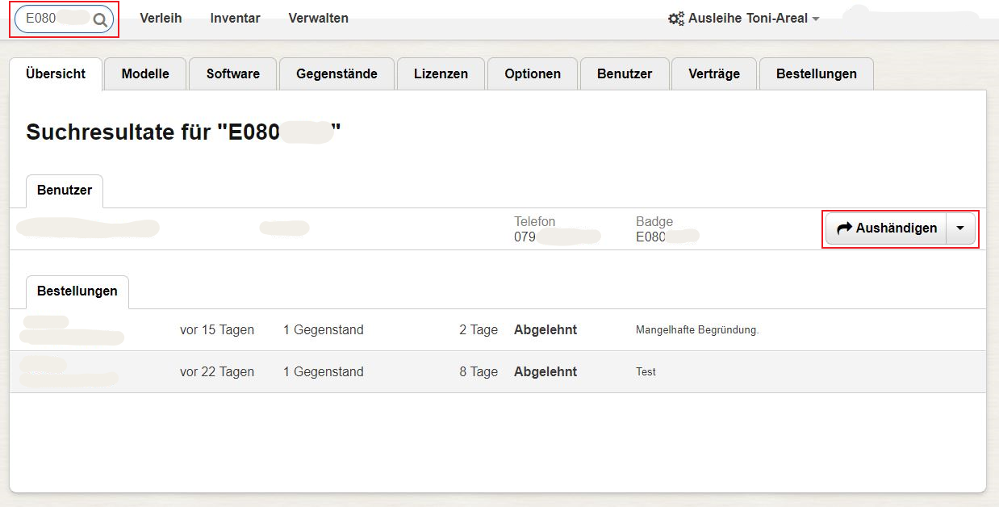
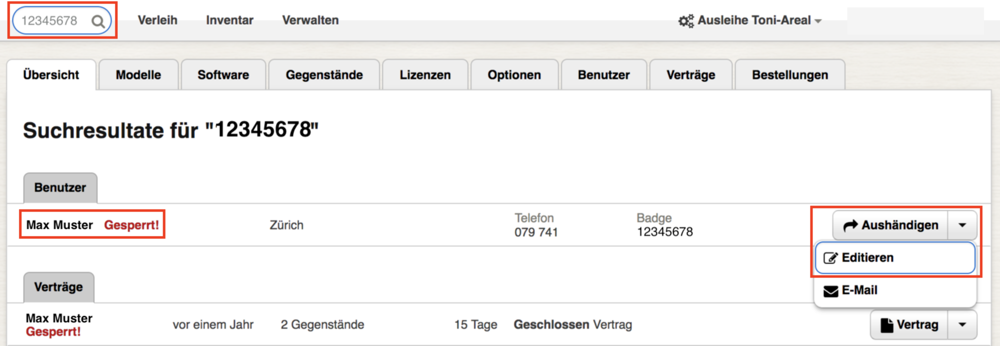
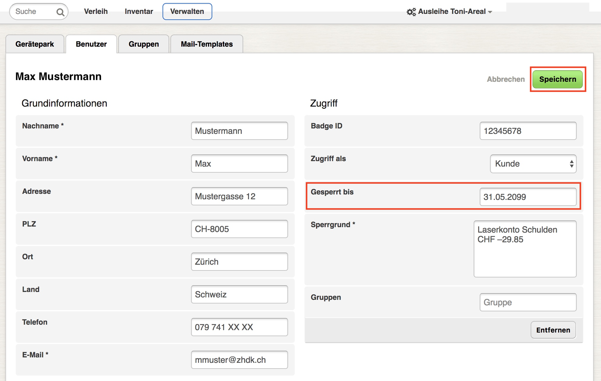

Abholen und Zurückbringen
Diese Seite betrifft nur Personen, die über die nötigen Berechtigungen verfügen: Inventar- oder Ausleihe-Verwalter.
- Abholen mit Bestellung
- Abholen ohne Bestellung
- Zurückbringen
- Ausleihfrist verkürzen/verlängern
- Verspätete Rückgabe
- Kunde entsperren
Abholen mit Bestellung
Bestellte Gegenstände können vom Kunden abgeholt werden, sobald dies genehmigt wurde. Die Identifikation erfolgt am einfachsten mittels Barcode-Scanner und Legitimationsausweis. Die Suchfunktion in der Navigationsleiste findet das Kundenprofil anhand der Ausweis- bzw. Badge-Nummer sofort. Starten Sie die Aushändigung mit einem Klick auf den entsprechenden Button.Setzen Sie zuerst den Haken einer Bestellung, die Sie aushändigen möchten. Klicken Sie in das nebenstehende Eingabefeld und scannen dann den Barcode des zuvor bereitgestellten auszuleihende Gegenstands. Mittels Dropdown-Menü können Sie weitere Gegenstände bzw. Optionen manuell hinzufügen. Nicht verfügbare Gegenstände sind rot markiert. Bewegen Sie den Mauszeiger auf das Dreiecksymbol rechts von "Eintrag ändern", um die Ausleihfrist ("Zeitleiste") oder das Modell ("Modell tauschen") zu bearbeiten. Wenn nötig, können Sie eine Bestellung mit "Löschen" annullieren. Zusätzlich zu verleihende Gegenstände können Sie direkt mithilfe der Suchfunktion hinzufügen. Schlussendlich können Sie die Aushändigung mit "Auswahl aushändigen" abschliessen.  Für umfangreiche Bestellungen können Sie eine detaillierte Auflistung der ausgewählten Gegenstände ausdrucken. Bewegen Sie dazu den Mauszeiger auf das Dreieckssymbol rechts von "Auswahl aushändigen" und wählen "Rüstliste" oder "Auswahl ausdrucken" aus. Letzteres zeigt ein Werteverzeichnis an, welches beispielsweise bei der Zolldeklaration hilfreich sein kann.
Für umfangreiche Bestellungen können Sie eine detaillierte Auflistung der ausgewählten Gegenstände ausdrucken. Bewegen Sie dazu den Mauszeiger auf das Dreieckssymbol rechts von "Auswahl aushändigen" und wählen "Rüstliste" oder "Auswahl ausdrucken" aus. Letzteres zeigt ein Werteverzeichnis an, welches beispielsweise bei der Zolldeklaration hilfreich sein kann.
Abholen ohne Bestellung
Bei Bedarf können auch Ausleihen erstellt werden, ohne dass sie zuvor bestellt wurden. Optionen oder nicht ausleihbare Gegenstände sind gar nicht bestellbar. Suchen Sie das Kundenprofil wie bei einer bestellten Ausleihe (siehe oben) und erfassen dann den gewünschten Gegenstand bzw. die Option manuell.
Zurückbringen
Bevor ein Ausleihvertrag geschlossen wird, kontrollieren Sie die zurück gebrachten Gegenstände auf Vollständigkeit und Funktionstüchtigkeit. Danach benützen Sie die Suchfunktion in der Navigationsleiste, um den Ausleihvertrag zu finden. Am einfachsten geschieht dies mittels Barcode-Scanner und Inventarnummer. Falls Sie einen Vertrag nicht finden, befinden Sie sich möglicherweise im falschen Gerätepark. Klicken Sie auf "Zurücknehmen", um den Vertrag zu bearbeiten. Bewegen Sie den Mauszeiger auf das Dreiecksymbol neben "Zurücknehmen", um einen offenen Vertrag anzuzeigen ("Vertrag").  Setzen Sie den Haken bei der Ausleihe, die Sie schliessen möchten. Dann klicken Sie auf "Auswahl zurücknehmen" und bestätigen mit "Zurücknehmen".
Setzen Sie den Haken bei der Ausleihe, die Sie schliessen möchten. Dann klicken Sie auf "Auswahl zurücknehmen" und bestätigen mit "Zurücknehmen".
Ausleihfrist verlängern/verkürzen
Suchen Sie den Ausleihvertrag wie in Zurückbringen beschrieben und beginnen dessen Bearbeitung mit "Zurücknehmen". Wählen Sie dann die betreffenden Gegenstände aus. Nun bewegen Sie den Mauszeiger auf das Dreiecksymbol rechts von "Auswahl zurücknehmen" und wählen "Auswahl editieren" aus. Sie können auch direkt die Ausleihfrist eines einzelnen Gegenstands bearbeiten, indem Sie auf "Eintrag ändern" klicken.
Verspätete Rückgabe
Falls die Ausleihfrist überschritten wurde, wird der Kunde gesperrt und kann keine neuen Reservationen tätigen. Er oder sie bekommt täglich eine Erinnerungsmail. Leihs kennzeichnet gesperrte Nutzer mit "Gesperrt!" in roter Farbe. Eine verspätete Rückgabe ist an dieser Markierung erkennbar.
Kunde entsperren
Falls eine Mahngebühr anfällt, muss diese bezahlt werden. Erst danach wird der Kunde entsperrt. Suchen Sie dafür das Kundenprofil mit der Suchfunktion in der Navigationsleiste. Am einfachsten geschieht dies anhand der Ausweis- bzw. Badge-Nummer. Bewegen Sie den Mauszeiger auf das Dreiecksymbol rechts von "Aushändigen" und wählen "Editieren".Entfernen Sie zuerst den Sperrgrund, indem Sie den Text im entsprechenden Feld löschen. Verfahren Sie mit dem Datum bei "Gesperrt bis" auf dieselbe Weise. Bestätigen Sie mit "Speichern". Der Kunde ist nun entsperrt und kann wieder Reservationen tätigen.